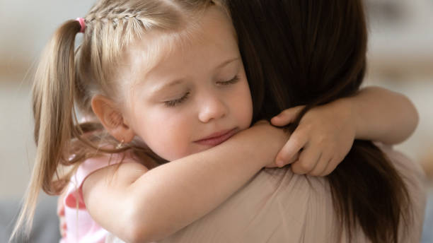
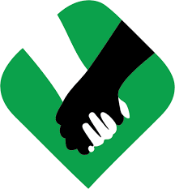

notre grande oportunites de parlee de vulnerable et des orphelins,la vie est merveilleux si vous desidais de la rentre ainsi. nous sommes une organisations caritatifs, nous obtenons des aides en international usd. La pensée aurait la forme d’un langage un langage de la pensée qu’on pourrait retrouver derrière les différents langages Bergson : la pensée a la forme d’une intuition le langage : un ensemble d’étiquettes abstraites et générales.

notre devoir de proteger les personnes atteinte albinisme mais aussi les enfants orphelins.
travaillons pour unir le monde, et pour un avenir meilleur
Apropos le droit international humanitaire des enfants orphelins et des albinos
Défense des droit humains pour les personnes atteintes d'albinisme
- 1978 avec création de la tanzania albinom society
pour remédier aux impacts physiques et psychosociaux de leur condition, les personnes atteintes d'albinisme ont commencé à se regroupes pour former des organisation et des groupes de soutien. Depuis lors, plus de 200 organisations de l'albinisme ont étés créées à travers le monde.
VIOLATION DE DROIT HUMAIN SUR PAA ET LE PISTE DE SOLUTION
L’albinisme continue d’être profondément mal compris partout dans le monde. Les personnes atteintes d’albinisme subissent des discriminations et de la stigmatisation à l’échelle mondiale. Toutes fois, l’essentiel des renseignements sur des cas d’agression physique contre ces personnes provient principalement de pays en Afrique. L’ampleur de l’écart de pigmentation entre la majorité de la population et des personnes atteintes d’albinisme dans une communauté tend en effet à être directement corrélée à la gravité et l’intensité de la discriminions grâce à une sensibilisation, à la présentation au conseil des droits de l’ homme d’ un rapport annuel portant sur des préoccupations spécifique; et à la prestation de services de conseils et d’assistance technique aux états membres, afin que ces derniers puissent mettre en œuvre des mesures spécifiquement en faveur de la protection sur leur territoire des personnes atteintes d’albinisme.
PROTECTION ET PREVALENCE
En juin 2015, et depuis cette date, le conseil des droits de l’homme a nommé Mme ikponwosa Ero en tant que première experte indépendante sur les droits de homme par les personnes atteintes par l’albinisme en 2021 Elle a été remplacée par Mme MULUKA Anne proclamant, à compter de 2015, le 13 juin journée mondiale de sensibilisation à l’ albinisme. En réponse à l’appel lancé par l’organisation de la société civile recommandant de considérer les personnes souffrant de l’albinisme comme un groupe à part entière ayant des besoins spécifiques nécessitant une attention particulière, de conseil des droits de l’homme des notions unies a de plus adopté le 26 mars 2015 la résolution 28L 10 Constituant le mandant d’expert indépendant sur la question des droits fondamentaux des personnes atteintes d’albinisme. Ce mandant important contribue à faire entendre la voix de personnes atteintes d’albinisme et à les protéger, grâce à une meilleure sensibilisation, à ma présentation au conseil des droits de l’homme d’un rapport annuel portant sur les préoccupations spécifique; et la prestation de services de conseils et d’assistance technique aux états membres, afin que ces derniers puissent mettre en œuvre des mesures spécifiques en faveur de la protection sur leur territoire des personnes atteintes d’albinisme.
QUELQUES CAS DE VIOLATION DE DROIT DES ALBINOS
Au Malawi, aller à l’école est risqué pour les enfants albinos. Dans ce pays une personne sur 130 est atteinte d’albinisme, ce qui représente au total plus de 134000 personnes. Parmi elles, 40%( environ 53000) sont en âge d’aller à l’école primaire ou secondaire. Dans certaines communautés, Les personnes atteintes d’albinisme sont agressées, voire tuées pour des partis de leur corps. Dans l’immense République démocratique du Congo comme partout en Afrique, il ne fait pas bon être né noir à la peau blanche, albinos, même si depuis 2015 par la journée internationale cherche de voies et moyens pour mettre fin à la stigmatisation de ces personnes. Les albinos présentent une anomalie ainsi qu’une mutation génétique et héréditaire qui affecte la pigmentation et se caractérise par un déficit de production de mélanine, entrainant une absence complète ou partielle de pigment dans la peau, les cheveux et les yeux. Au Congo, les congolais considèrent encore les albinos comme des êtres diaboliques, des sorciers. Cela attire leur indifférence Dans certains pays de l’est, les albinos sont persécutés en raison de croyances liées à la sorcellerie ou même sacrifiés dans des rites. Certaines personnes vont jusqu’à déterrer les os des albinos pour les pratique alors que nous sommes tous être humain.
LES SOLUTION ENVISAGEE
Comme toutes autres solutions envisagées en violation de droit humain il y a certaines résolutions déjà entreprise en faveur des personnes atteintes d’albinisme entre autre : Les résolutions 23/13, 24/33,26/10 du conseil des droits de l’homme La résolution 263 de la commission africaine qui réclamait la prévention des agressions et de la discrimination à l’encontre des personnes atteintes d’albinisme. La résolution 69/170. Proclamant à compter de 2015, le 13 juin journée mondiale de sensibilisation à l’albinisme par l’ensemble générale.
CONCLUSION
Comme toute être humain les albinos partagent les mêmes droit que le non albinos, et doit jouir de la liberté sans distinction aucune. Cependant tous les monde est appeler à sensibiliser son entourage et faire preuve de bonne moralité pour protéger cette être humain afin de lutter contre la discrimination, la marginalisation dont ils subissent chaque fois dans leur milieu. Ma recommandation au monde est particulièrement à la population de Goma et de mettre fin à la persécution des PAA, car ils ne sont ni des surnaturels ni des fantômes mais des êtres humains à plein droits comme toutes autres. En raison cette maladie héréditaire dont ils sont victimes les albinos ont besoins de notre amour et rapprochement afin des aider à surmonter leurs dépressions, la considération de cette être humain permettra de récréer un monde harmonier et heureux pour les albinos : L’ETAT ET LE FONCTIONNEMENT DE LA JUSTICE Après avoir analysé le droit objectif et subjectif, il sied de spécifier où s’applique ce droit section1) et comment fonctionne la justice (section 2). SECTION I: L’ETAT ET LA NOTION DE LA CONSTITUTION Pour saisir la réalité qu’est l’Etat, il convient de chercher son origine et sa définition (§1) avant de donner ses éléments constitutifs (§1). §1. Origine et Définition de l’Etat A. Origine Même si la réalité a précédé le concept, le mot « Etat » apparait au 16ème siècle avec Nicolas Machiavel qui écrivit dans son ouvrage le « Prince » : « toutes les dominations qui ont une autorité sur les hommes sont des Etats ». Cependant, cette autorité qu’est l’Etat serait, aux dires de Thomas Hobbes et de Jacques Rousseau, le résultat d’un contrat social conclu par les hommes et afin de quitter l’état de nature caractérisé par l’absence des normes et par une insécurité permanente. Contrairement à l’état de nature, le contrat social permettait l’établissement d’un Etat où seules les lois allaient règlementer le comportement des hommes dans la société. C’est cette autorité qui devait faire appliquer les lois, pour garantir la paix et la sécurité entre les hommes. Quelle que soit la diversité des théories qui expliquent l’origine de l’Etat, il importe de retenir que l’Etat est une institution crée par les hommes qui ont abandonné leurs volontés individuelles et ont décidé de se soumettre à son pouvoir. B. Définition et éléments constitutifs de l’Etat 1. Définition De ce point de vue, l’Etat peut être défini comme une entité politique ou une personne morale caractérisée par un pouvoir institutionnalisé et souverain régissant dans un cadre territorial déterminé, une Nation dont il est censé traduire ses aspirations. GROTIUS ou PUS exactement Hugo De GROOT définit l’Etat comme un corps parfait des personnes libres qui se sont jointes ensemble pour jouir paisiblement de leurs droits et pour leur utilité commune. Il forme sa doctrine sur l’existence d’un contrat initiale par lequel les hommes ont renoncé à l’Etat de nature. Pour lui les lois sont à l’Etat ce que l’âme est au corps humain et le territoire ne constitue pas un élément de l’état mais plutôt le contrat qui lie des individus à l’Etat. Par conséquent aucune de ses parties ne peut être cédée à qui que ce soit sans le consentement de la population concernée. Ainsi, ce corps est constitué d’un ensemble d’éléments (section 2). 2. Eléments constitutifs de l’Etat De la définition de l’Etat, les éléments suivants peuvent être dégagés : le territoire, la population, le pouvoir organisé (le gouvernement) et la souveraineté (indépendance). a. Le Territoire Le territoire d’un Etat est l’espace sur lequel s’exerce son autorité souveraine. Il est terrestre, maritime, aérien ou fluvial. Tout Etat dispose d’un territoire, grand ou petit. Le territoire d’un Etat est limité par les frontières d’autres Etats. b. La population Il n’y a pas d’Etat sans population peu importe sa taille. La population d’un Etat est l’ensemble des habitants vivant sur le territoire de cet Etat, qu’il s’agisse des nationaux ou des étrangers. Cependant, les citoyens sont uniquement des nationaux, c’est-à-dire des personnes qui sont liées à un Etat par le lien de nationalité ou de citoyenneté. Le lien de nationalité est souvent déterminé par deux critères adoptés par un Etat : le jus sanginis (droit de sang) selon lequel une personne est citoyenne d’un Etat si elle est née des parents ayant (tous ou l’un d’eux) la nationalité de cet Etat, le jus soli (droit du sol) suivant lequel l’on devient citoyen d’un Etat si l’on nait sur le territoire d’un Etat donné. c. Le gouvernement Le gouvernement est l’autorité qui coordonne e dirige un Etat et exerce le pouvoir sur la population et le territoire. Il est constitué des pouvoirs publics ayant au sommet exécutif dirigé par un chef d’Etat qui peut être un monarque héréditaire (roi, reine, empereur) ou un président. Le gouvernement n’est pas à lui seul l’Etat si les autres éléments sont mis de côté. d. La souveraineté Par souveraineté, il s’agit d’une capacité qu’a un Etat d’être soumis à aucun pouvoir en dehors du sein. De cette manière, sur le plan du droit international, tous les Etats sont égaux et souverains, c’est-à-dire indépendants. Cependant, il convient de préciser que la souveraineté a une dimension juridique alors que l’indépendance une dimension politique. La souveraineté signifie qu’un Etat à la plénitude de pouvoir sur son sol et ses habitants. Cette souveraineté lui confère des droits, notamment le droit de législation et de réglementation, de police ; de justice. Sujet de dissertation : le Vatican est-il un Etat ? §2. La notion de la constitution A. Définition et élaboration de la constitution. 1. Définition 2. Elaboration de la constitution L'élaboration d'une Constitution traduit la volonté de limiter le pouvoir et de garantir les droits des citoyens. Toutefois cette conception mettra du temps à s'imposer, car la notion de Constitution est plurielle. on distingue trois techniques d’élaboration des Constitutions, se déclinant en mécanismes autoritaires, démocratiques et mixte son de la constitution. a. Les Constitutions octroyées La Constitution octroyée est celle dont l’élaboration et l’adoption sont décidées sans consultation populaire. Habituellement produite par une décision unilatérale d’un homme ou groupe d’individus, la Constitution octroyée est différente du pacte qui nécessite une rencontre, même théorique, de volontés des parties prenantes, à savoir, le monarque, auteur du texte et le peuple qui l’approuve. La République démocratique du Congo a connu deux Constitutions octroyées : l’une, la Loi fondamentale du 19 mai 1960 relative aux structures du Congo, l’autre, le Décret-loi constitutionnel n° 003 du 27 mai 1997 relatif à l’organisation et au fonctionnement du pouvoir en République démocratique du Congo. b. Les Constitutions conventionnelles Élaborées à la suite des crises politiques et/ou militaires, les Constitutions conventionnelles sont, habituellement, produites par les accords politiques61 qui en constituent, par ailleurs, le fondement ; elles apparaissent provisoires, circonstancielles et tournées vers la gestion épisodique du pouvoir politique. Cependant, trois Constitutions ont été élaborées sur pied des accords politiques : Il s’agit de l’Acte constitutionnel harmonisé relatif à la période de transition du 2 avril 1993, de l’Acte constitutionnel de la transition du 9 avril 1994 la Constitution de la transition du 4 avril 2003. L’importance que revêt, cependant, le texte constitutionnel du 4 août 1992 dans la compréhension de la suite du processus constitutionnel mérite une analyse conséquente. c. Les Constitutions adoptées par référendum En régime démocratique, la Constitution est élaborée par une assemblée constituante, auteur d’un projet de Constitution obligatoirement soumis à l’approbation populaire, la technique aboutit à une double consultation populaire : . La Constitution du 1er août 1964 (Constitution de Luluabourg), celles du 24 juin 1967 et du 18 février 2006. B. L’organisation du pouvoir On distingue généralement deux axes dans l’organisation du pouvoir. Le premier est le plus connu, c’est celui de la répartition du pouvoir entre le législatif, l’exécutif et le judiciaire. Cet axe horizontal permet de distinguer les régimes politiques. Le second est celui des relations entre le centre et la périphérie. En quelque sorte il s'agit d'un axe vertical sur lequel apparaissent les différentes formes que peuvent prendre les Etats. 1. L’organisation horizontale du pouvoir : les régimes politiques Le régime politique peut être défini comme l’ensemble des règles constitutionnelles déterminant l’organisation et le fonctionnement des institutions politiques d’un Etat donné. Une typologie des régimes peut être établie sur la base d’un critère de classification a. Le critère de la classification : la théorie de la séparation des pouvoir C’est Montesquieu qui est l’auteur de la théorie de la séparation des pouvoirs en tous les cas c’est lui qui l’a formulé de la manière quasiment définitive, toutefois ses origines sont variées. En effet nous distiguons trois types de pouvoir politique : Le pouvoir législatif Le pouvoir législatif est exercé conjointement par l’Assemblée nationale et par le Sénat, qui composent le Parlement. L’ordre du jour de chaque assemblée est fixé, pour sa plus large part, par le Gouvernement (part du pouvoir exécutif). Le pouvoir exécutif Le pouvoir exécutif est assuré conjointement par le président de la République et par le Premier ministre. Le président de la République est élu au suffrage universel direct pour 5 ans. Il incarne et représente la RDC. Il est le chef des armées et préserve l’indépendance de la justice. Il promulgue les lois, nomme le Premier ministre, et peut consulter les électeurs par référendum sur un certain nombre de sujets. En suite le Premier ministre quant à lui est choisi et nommé par le président de la République. Il propose au chef de l’Etat les membres du Gouvernement, dont il coordonne et dirige l’activité. Il « détermine et conduit la politique de la nation », et détient le pouvoir
notre organisation pour faire attendre la voix des minorités

nous sommes disponible et pret a defendre les droits des albinos et des enfants orphelins, notre grande resposibilite est d'assurer l'avenir meilleur aux vulnerables